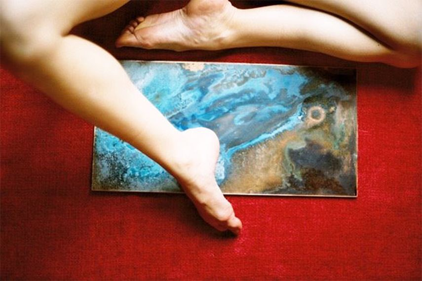

« Des pièces uniques aux petites
séries, l’objet d’art est
une histoire qui se raconte
dans le creux de l’oreille.»


« Le Déshabilloir c’est aussi un lieu de
rencontre et de connexion où conversent
les artistes, les artisans et les inspirés.
Comme dans un théâtre, on aime y
imaginer des scénographies pour
raconter des histoires.»